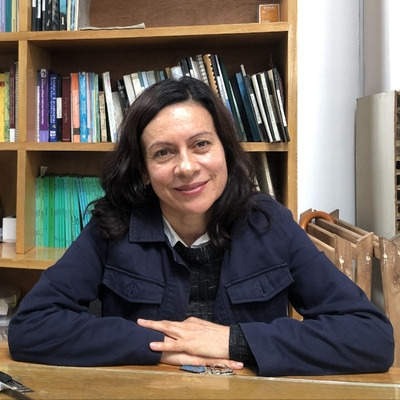

Integrantes
Marison Amaya Marquez

Investigadora principal
Mateo Lopez Espejo
Mateo es un postdoc y colaborador con experiencia previa en neurociencias. Está interesado en la etología de la manipulación floral, y sus potenciales costos cognitivos. En sus ratos líbre se dedica a leer ciencia ficción y practicar esgrima histórica.
Santiago Samundio
Santiago es un estudiante de pregrado interesado en la ecología cognitiva de los polinizadores, la entomología y el desarrollo de nuevas técnicas para el estudio de las abejas.